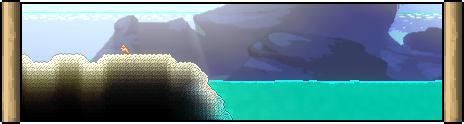
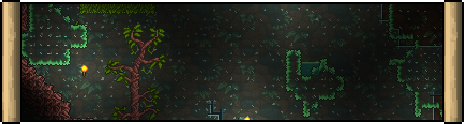

Biomes
If you are looking for the official page of vanilla biomes, click here.
Biomes are the different types of areas that any Terraria world can contain. Every biome has its own characteristic terrain blocks, walls, collectible items, backgrounds, enemies, critters, music themes, Angler quest fish and other features.
The Ashen, Defiled and Riven are all "contagious" biomes which spread to certain adjacent tiles. In pre-Hardmode, the evil biomes will only overtake other biomes via grasses, ice, sand and stone, but once Hardmode begins all three biomes can spread directly through most soils.
Space biomes
The Dawn

The Dawn is a planned post-Mech sky biome of holy themes. The Dawn is a sacred place that has physically manifested into the Terraria world so the angels that watch after it can more directly handle the current instability of the world. Every entity that is not holy enough shall not enter the confines of the Dawn, and will be met with "undesirable consequences" in the event that were to happen. The Dawn is here for no other purpose than to safeguard Terraria.
Surface biomes
Ashen Factory

The Ashen Factory is a planned third world evil added by Origins. The Factory is a machine that was constructed to create more machines for an ancient civilization to easily colonize the world. It and its machinations are a threat to the Terraria world because of its harmful effects on the environment. The Ashen does not spread unlike the other four evils, but it can only be removed through demolition. As a matter of fact, it offers the most content for Demolitionists.
Brine Pool

The Brine Pool is a natural hardmode biome deep within the Jungle. The hostile environment is full of extremophile monsters and brine-rich water that causes Toxic Shock to anything not adapted to it. Ironically, it harbors a very diverse ecosystem based around the hydrothermal vents within its hollow interior. It would be of the Terrarian's interest to explore this biome early into hardmode, with proper protection of course.
Defiled Wastelands

The Defiled Wastelands is the first world evil added by Origins. The Defiled is an ancient, alien entity brought to this world from unknown cause and was immediately recognized by Terraria's inhabitants to be a threat. A lone witch took the Defiled entity down to the Dusk with her to banish both of them from the Terraria world, but it was released by the world itself after a long time to act as a surrogate evil in order to achieve balance. They recognize the Terrarian and attempt to counter them with their anti-bodies, constantly improving and introducing new forms in hopes of stopping the Terrarian in their tracks. They are an intelligent collective conciousness and offer a unique, story-driven progression of their own. The Defiled offers a lot of content to Mages.
Eutrophic Sea
The Eutrophic Sea is a unique archetype of the Riven Hive that has encompassed an Ocean. The Eutrophic Sea is a horrifying sight to behold on the lands of Terraria as the Riven Hive as the parasite is able to overtake and thrive with ease. It spreads fast due to the salt and mass-rich water, not only making it easier for it to synthesize Alkahest, but also providing it with more mass to use. Even if you made a boat of glass, the viscosity of the gel wouldn't let you go anywhere.
Riven Hive

The Riven Hive is the second world evil added by Origins. Don't let its beauty fool you for it is very easy to become one with the Hive's ecosystem. At base level, the Riven Hive is just like any other environment, except that it was molded by a parasite known as the "Primordial Amoeba". The Amoeba isn't evil in nature, rather it is quite selfish forcing its hand, or rather flagella, to the world around it. The Riven Hive is a hostile biome where certain species have evolved and even been born directly from its hot and humid caverns. The Riven offers the most content for Summoners out of the five evils.
Cavern biomes
Defiled Caverns

The Defiled Caverns is created in the Cavern layer upon defeating the Wall of Flesh. The presence of the Defiled Caverns is a terrible sign that the Defiled is making rapid progress to consuming the entire world and must be stopped immediately. Like the other underground evil biomes, it is one of the only places to obtain Souls of Night, but not its evil substance: Black Bile. Uniquely, the Defiled Caverns' theme can be heard in pre-hardmode at the appropriate depth.
Fiberglass Undergrowth
The Fiberglass Undergrowth is a natural Cavern biome located somewhere under the Brine Pool in the Underground Jungle. The Undergrowth is full of enchanted elemental spawn that safeguard the biome from any intruders. Deeper within, however, resides the colossal Fiberglass Weaver that will protect its home.
Underground Riven hive

The Underground Riven hive forms in the Cavern layer upon the Wall of Flesh's defeat. The Underground Hive is no different than the Riven Hive closer to the surface, merely a sign that it has spread quite fast. Don't be too hasty, however, as the layout of the caverns makes the Riven's gooey amebic gel even more dangerous, and Mitoworms multiply rampantly as well.
Hell biomes
The Dusk

The Dusk is a hardmode Hell biome that serves as a purgatory for Terraria's worst. It is bastioned by the clockwork machinations built to watch after the evil denizens banished to its confines. The Dusk is ultimately another safeguard established by the world itself to maintain it like its holy-equivalent, the Dawn.
The Cosmos biomes
Fractured Isles

The Fractured Isles are a planned post-Moon Lord biome residing in the Cosmos dimension. The Isles were once a part of a planet home to an alien civilization that collapsed from an unknown cause. There are artificial structures on the the isles that remain the test of time to serve as some kind of ceremonial grounds for their long lost and destined warriors.
Structures
Cubekon Temple

The Cubekon Temple is a post-Moon Lord temple-like structure found adjacent to any Marble Cave. The Temple is very blocky and modular by design despite being carved out of Batholith. Within the temple, resides one of the most technologically-advanced species known to Terraria and they don't welcome any intruders. The temple is only accessible to those of its own kind, measured by the amount of energy within their vessels, but that ultimately means its accessible to any entity able to wield such power, like the Terrarian. The Cubekons are always curious to learn more, and are working towards obtaining their own version of the singularity.